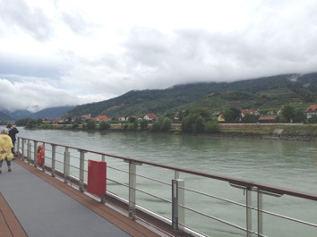

Travel

Viking River Cruise 2015
Day 5, July 29
Wachau Valley & Melk, Austria



Melk Abbey
With its cobblestone streets and majestic abbey, Melk is a highlight of the Danube Valley. Melk Abbey is possibly the most famous abbey in Austria. ramatically situated on an outcrop rising above the Danube, it stands resplendent in a golden hue, crowned by towers. The views from the abbey are sensational. Built between 1702 and 1735 by architect Jakob Prandtauer, the abbey was originally a royal palace with ceremonial courts, guest apartments, grand halls and a library.
In the 11 century Leopold II of Babenberg presented the palace to the Benedictine monks, who turned it into a fortified abbey. The highlight of the abbey is the Stiftskirche, or “Abbey Church.” With its twin spires and high octagonal dome, the church has an astonishing number of windows. Its jaw-dropping interior is a baroque extravaganza, with magnificent frescoes by Johann Michael Rottmayr, and the library contains around 80,000 medieval manuscripts.
The monastic community of Melk is more than 900 years old and black-robed Benedictine monks still stroll amid the marble sculptures and frescoed walls. It is also a prestigious monastery school with more than 700 students.
(No photos were allowed inside the abbey.)
A friend of ours purchased some Apricot Schnapps at the abbey which he shared with us one evening on the ship.
The Wachau Valley
The stretch of the Danube between Krems and Melk, known locally as “the Wachau,” is possibly the loveliest along the entire length of this majestic river. Both banks are dotted with ruined castles and medieval towns and are lined with terraced vineyards. Listed as a UNESCO World Heritage Site in 2000, the Wachau is described as “an outstanding example of a riverine landscape.” Noted for its cultural importance as well as its physical beauty, UNESCO says, “The architecture, the human settlements, and the agricultural use of the land in the Wachau vividly illustrate a basically medieval landscape which has evolved organically and harmoniously over time.”